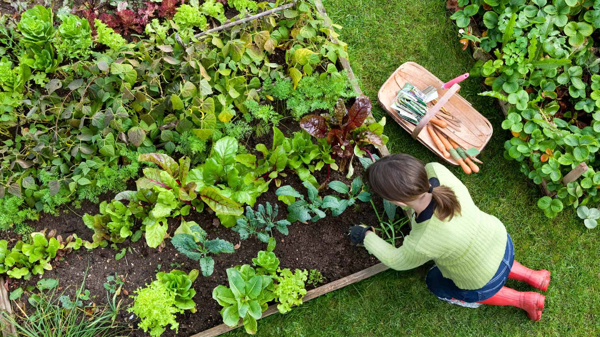
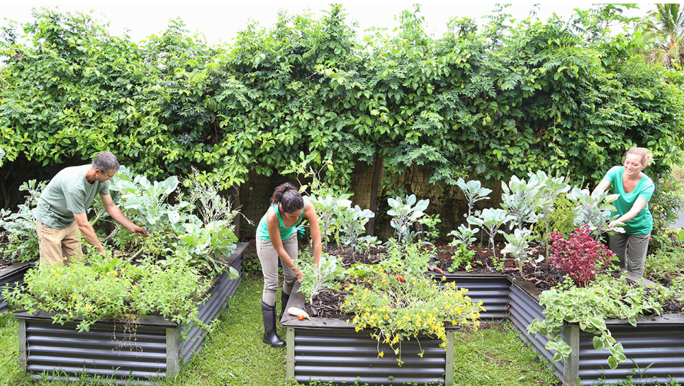

 Our mission is to empower urban communities through the creation of sustainable community gardens. By fostering local food production, we aim to reduce grocery costs, promote healthy living, and support environmental stewardship. Our approach goes beyond simply growing food; we are committed to creating spaces where individuals can come together, learn, and thrive. Through these gardens, we help cultivate both fresh produce and a sense of community, where relationships are strengthened and neighbors support one another in the shared responsibility of growing food. We believe that by providing accessible resources, tools, and guidance, anyone, regardless of their experience or background, can start their own garden. These gardens become not only a source of nourishment but also a sanctuary for personal growth, creativity, and well-being. Through simple steps and shared knowledge, we empower individuals to take control of their food systems and build resilience in their neighborhoods. Starting a community garden might seem like a big task, but it begins with a few key steps. First, identify a suitable plot of land—whether public or private—and gather support from local residents and organizations. Next, plan the layout of the garden, considering factors like sunlight, water access, and the types of crops that will thrive in your climate. Securing necessary tools, seeds, and composting materials will be essential for success, and through workshops or partnerships, we provide the knowledge and materials to get started. How to Start
 These community gardens bring people together, fostering connections as neighbors share the responsibility of growing food. By promoting composting and sustainable practices, the gardens help reduce overconsumption and food waste, creating a healthier, more mindful approach to urban living. These community gardens are about more than just plants; they’re about people coming together. By engaging in the shared work of gardening, neighbors form bonds, build trust, and create a collective sense of pride. Whether through casual conversations, volunteer days, or seasonal celebrations, the garden becomes a hub for connection and support. In addition to growing food, these gardens promote sustainable practices, such as composting, water conservation, and organic pest management. By reducing reliance on chemical fertilizers and minimizing waste, we help nurture both the environment and the local community. Through mindful gardening practices, we reduce overconsumption and food waste, encouraging more sustainable consumption habits that benefit not only the gardeners but the planet as a whole. Ultimately, these gardens contribute to a healthier, more self-sufficient, and mindful approach to urban living, where every plant nurtured and harvested is a step toward a more connected and sustainable future.